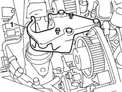
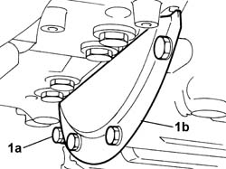
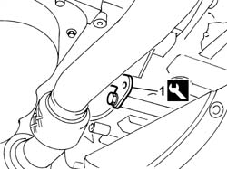
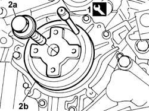
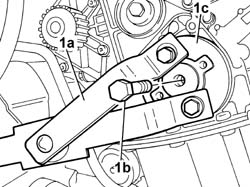
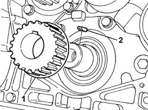
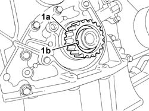

1032B44 TOOTHED DRIVE PULLEY - R + R WITH TIMING BELT REMOVED
- Path
- Procedures > 10 ENGINE > 1032 TIMING SYSTEM > 1032B BELT TIMING SYSTEM > 1032B44 TOOTHED DRIVE PULLEY - R + R WITH TIMING BELT REMOVED
- Kind
- repair procedure (removal / refitting; the operation number is the code)
- Applies to
- all engines; all production periods
- Interactive page
- https://sloeber94.github.io/elrnDB-fUlss/en/#/179006929
Applies to: engines: 3.0 24V V6; all production periods
 Removing
Removing
 Refitting
Refitting1. Temporarily refit the rigid power unit support.

Applies to: engines: 3.0 24V V6; all production periods
- Raise the vehicle.
1. Undo the fixing bolts (1a) and remove the flywheel guard (1b).

Applies to: engines: 3.0 24V V6; all production periods
1. Fit the flywheel lock.
 | Description | Code | Function |
|---|---|---|---|
1 | Flywheel lock | 1.867.030.000 | Engine flywheel lock |

Applies to: engines: 3.0 24V V6; all production periods
1. Remove the anchoring pin from the toothed drive pulley.
| Description | Code | Function |
|---|---|---|---|
1 | Pins | 1.870.893.000 | Securing crankshaft and timing pullies |
2. Undo the fixing bolt (2a) and remove the timing belt toothed drive pulley (2b).
- Keep the key from the housing in the crankshaft.

Applies to: engines: 3.0 24V V6; all production periods
Refitting
Removing- Place the key in the housing in the crankshaft.
- Refit the toothed drive pulley and fit the anchoring pin.
| Description | Code | Function |
|---|---|---|---|
. | Pins | 1.870.893.000 | Securing crankshaft and timing pullies |
- Tighten the fixing bolt to the recommended torque.
 | Value - daNm | Fastening | Component | Ø |
|---|---|---|---|---|
. | 4.0 + 80° | Bolt | TIMING BELT TOOTHED DRIVE PULLEY - R and R |
- Undo the fixing bolt and remove the flywheel lock.
| Description | Code | Function |
|---|---|---|---|
. | Flywheel lock | 1.867.030.000 | Engine flywheel lock |
- Position the flywheel guard and tighten the fixing bolts.
- Lower the vehicle.
- Position the hydraulic lift.
- Remove the rigid power unit support.
Applies to: engines: 2.0 16v; production: fino a 04/03
Removing
Refitting1. Undo the fixing bolt (1b), using the tool (1a), and remove the flange (1c).
Description | Code | Function | |
|---|---|---|---|
1a | Counter-torque | 1.870.716.000 | Lock the rotation of the toothed drive pulley |

Applies to: engines: 2.0 16v; production: fino a 04/03
1. Remove the toothed drive pulley (1a) and the key (1b).

Applies to: engines: 2.0 16v; production: fino a 04/03
Refitting
RemovingFit the key and the toothed drive pulley.
Fit the flange and screw in the toothed drive pulley fixing bolt without tightening it.
Applies to: engines: 2.0 16V JTD; all production periods
Removing
Refitting1. Remove the fastening tabs.
2. Remove the toothed pulley from the crankshaft housing.

Applies to: engines: 2.0 16V JTD; all production periods
Refitting
Removing- Position the pulley in the special housing on the crankshaft.
- Place the fastening tabs in position.
Applies to: engines: 2.2 16V JTD; all production periods
Removing
Refitting1. Remove the fastening tabs.
2. Remove the toothed pulley from the crankshaft housing.
Applies to: engines: 2.2 16V JTD; all production periods
Refitting
Removing- Position the pulley in the special housing on the crankshaft.
- Place the fastening tabs in position.
Applies to: engines: 2.0 16v; production: da 04/03
Removing
Refitting1. Remove the toothed drive pulley (1a) and the key (1b).

Applies to: engines: 2.0 16v; production: da 04/03
Refitting
Removing- Fit the key and the toothed drive pulley.